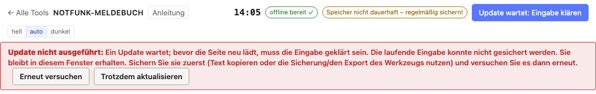
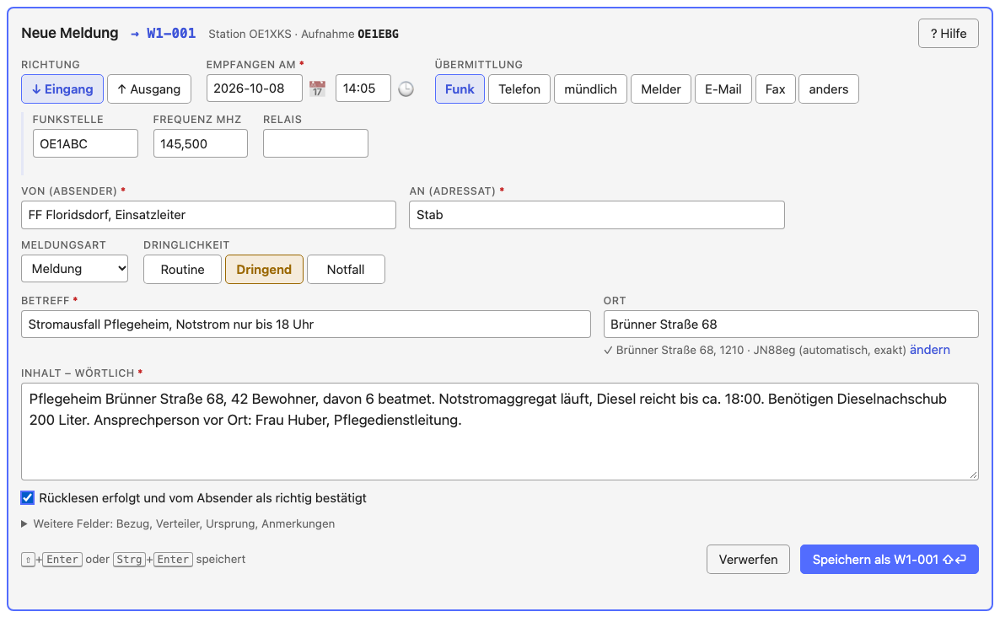
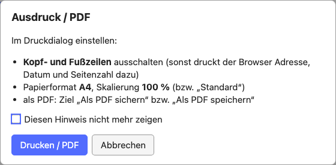

Notfunk-Meldebuch: Anleitung
Notfunk-Meldebuch öffnen Alle Tools · Offline-Datei · Datenquellen · Quellcode
Das Notfunk-Meldebuch ist ein Meldebuch für den Notfunk: Meldungen aufnehmen, lückenlos nummerieren, an die Meldesammelstelle übergeben, übertragen und ausdrucken. Es läuft vollständig im Browser und ohne Internet; alle Daten bleiben auf dem Gerät.
Entwurf
Das Meldungsformat ist noch nicht mit dem Notfunkreferat Wien und der Meldesammelstelle abgestimmt. Felder, Bezeichnungen und die Dringlichkeitsstufen können sich ändern. Für Übungen gedacht.
Die Kurzfassung steht im Werkzeug selbst: „? Hilfe“ oben im Formular oder F1.
Kurz: so geht's los
- Notfunk-Meldebuch öffnen, einmal mit Internet; danach läuft es auch offline (Vorbereitung).
- „+ Neuer Einsatz“: Name und Stationskürzel eintragen (Einen Einsatz anlegen).
- Die erste Meldung aufnehmen und speichern; dabei wird die Nummer vergeben (Eine Meldung aufnehmen).
- Regelmäßig eine Sicherung (JSON) herunterladen (Exporte und Sicherung).
Vorbereitung
Offline verwenden. Beim ersten Öffnen mit Internet lädt das Meldebuch alles, was es braucht (Rufzeichenliste, Relaisliste, Wiener Adressen). Danach funktioniert es ohne Verbindung. „offline bereit ✓“ oben rechts zeigt das an. Steht dort „offline nicht bereit“, hat der Browser die Offline-Kopie gelöscht; mit Internet geöffnet, repariert sie sich selbst („Offline-Kopie wird repariert…“). Gibt es auf dem Server inzwischen eine neue Version, steht „Neue Version auf dem Server – bitte aktualisieren“; dann über „Update verfügbar“ aktualisieren. Bei „Offline-Einrichtung fehlgeschlagen“ oder „Reparatur fehlgeschlagen“ die Seite mit Internet neu laden. Am Handy oder Tablet über „Zum Startbildschirm hinzufügen“ als App ablegen. Für Laptops ohne Internet gibt es die Offline-Datei (eine HTML-Datei, etwa 6 MB, unten auf der Startseite des Werkzeugs), etwa für einen USB-Stick.
Daten sichern. „Speicher dauerhaft ✓“ heißt, der Browser löscht die Daten nicht von selbst. Steht dort „nicht dauerhaft“, ist eine regelmäßige Sicherung umso wichtiger. Der Sicherungsstand steht oben rechts („Sicherung gestartet 14:40 · 3 Meldungen ungesichert“ oder „Sicherung gestartet 14:40 · nichts ungesichert“, vorher „Noch keine Sicherung“); ein Klick darauf lädt eine neue Sicherung (JSON) herunter. Die Zeit ist der Moment, in dem das Meldebuch den Download gestartet hat; „ungesichert“ zählt die Meldungen, die seitdem neu oder geändert sind. Auch „nichts ungesichert“ heißt nur: seit dem Start des Downloads ist nichts dazugekommen. Ob die Datei vollständig angekommen ist und noch irgendwo liegt, kann das Meldebuch nicht wissen; siehe Gespeichert, Entwurf und Sicherung.
Neue Version. Erscheint „Update verfügbar“, ist eine neue Version geladen. Sie wird erst nach einem Klick darauf aktiv, nicht von selbst. Der Klick lädt aber alle offenen Tabs und Fenster des Meldebuchs neu; einen Aufschub, den man je Tab wählen kann, gibt es nicht. Gespeicherte Meldungen und die vergebenen Nummern bleiben unverändert. Vor dem Neuladen sichert jeder Tab den halb ausgefüllten Entwurf und holt ihn danach zurück. Gelingt das Sichern in einem Tab nicht (zum Beispiel bei vollem Speicher), wird dieser Tab nicht neu geladen: die Eingabe bleibt stehen, der Knopf heißt „Update wartet: Eingabe klären“, und eine rote Meldung unter der Kopfzeile erklärt warum. Haben zwei Fenster verschiedene Entwürfe (ein Entwurf ist eine noch nicht gespeicherte Meldung) oder wartet ein älterer Entwurf auf Prüfung, bietet die Meldung die Wahl gleich an: „Meinen Text sichern“ ersetzt den Entwurf des anderen Fensters, „Entwurf des anderen Fensters laden“ ersetzt den Text in diesem Fenster; bei einem älteren Entwurf „anwenden“ (Ihr Text wird gesichert) oder „verwerfen“ (die gespeicherte Fassung wird geladen). Danach läuft das Update von selbst weiter. „Erneut versuchen“ und, mit Rückfrage (sie nennt, was verloren geht), „Trotzdem aktualisieren“ gibt es immer. Hat ein anderer Tab das Update schon installiert, steht dieselbe Meldung in dem Tab („Neuladen nicht ausgeführt“); die Seite läuft bis zum Neuladen mit der alten Version. Trotzdem vor jedem Update: fertige Meldungen speichern und wichtige unfertige Eingaben außerhalb des Meldebuchs kopieren. Ein Entwurf ist keine gespeicherte Meldung, und die Sicherung (JSON) enthält keine unfertigen Eingaben. Im Einsatz lieber erst nach einer ruhigen Phase aktualisieren.

Einen Einsatz anlegen

| Feld | Bedeutung | Beispiel |
|---|---|---|
| Einsatz / Übung | Name des Einsatzes | Übung Blackout Wien |
| Stationskürzel | steht vor jeder Nummer; jedes Gerät bzw. jede Station eines Einsatzes bekommt ein eigenes | W1 |
| Eigene Station: | ||
| Stationsrufzeichen | Rufzeichen der eigenen Funkstation, z. B. die Klubstation; kann vom Rufzeichen des Operators abweichen | OE1XKS |
| Standort der Station (Adresse) | wo das eigene Funkgerät steht; steht oben im Ausdruck | Lichtinsel 12 Floridsdorf |
| Für Stelle | für wen die Station arbeitet: Adressat eingehender und Absender ausgehender Meldungen, solange nichts anderes eingetragen ist | Stab |
| Frequenz, Relais | Vorgabe für neue Meldungen | 145,500 · OE1XUU |
| Am Gerät: | ||
| Operator | wer am Gerät aufnimmt; beim Schichtwechsel ändern | OE1EBG |
Stationsrufzeichen und Operator werden bei jeder Meldung mitgespeichert: Im Ausdruck steht „Aufgenommen von OE1EBG, an Station OE1XKS“, im Geschäftsbuch (CSV) gibt es eine Spalte „Stationsrufzeichen“.
Alles außer dem Stationskürzel lässt sich später im aufklappbaren Feld „Einsatz“ über dem Formular ändern; Änderungen gelten für neue Meldungen. Das Stationskürzel bleibt fest, sobald die erste Meldung gespeichert ist.
Schichtwechsel: im Feld „Einsatz“ den Operator ändern (oder oben im Formular auf „Aufnahme OE1EBG“ klicken). Gespeicherte Meldungen behalten den Operator, der sie aufgenommen hat.
Der Ablauf einer Meldung
- Wortlaut aufnehmen: den Inhalt wörtlich, wie übermittelt.
- Rücklesen bestätigen: beim Eingang zurücklesen, der Absender bestätigt. Beim Ausgang liest die Funkstelle zurück.
- Meldung sichern: Speichern vergibt die Notfunk-Nummer.
- Übergabe bzw. Übertragung dokumentieren: bei der Meldung „übergeben“ (Eingang) bzw. „übertragen“ (Ausgang) eintragen, danach die Bestätigung.
- Externe Referenz ergänzen: die Nummer, die die Meldesammelstelle zurückmeldet.
„Übergeben“ oder „übertragen“ heißt nie, dass ein Auftrag im Inhalt erledigt ist.
Eine Meldung aufnehmen

Das Formular steht im Meldebuch ganz oben. Die nächste Nummer wird angezeigt („→ W1-008“), aber erst beim Speichern vergeben.
Die Felder
| Feld | Bedeutung | Beispiel |
|---|---|---|
| Richtung | Eingang (↓) oder Ausgang (↑) | |
| Empfangen am / Gesendet am | wann die Meldung übermittelt wurde: Datum (JJJJ-MM-TT) und Uhrzeit (HH:MM, 24 Stunden) in zwei Feldern, Ortszeit. Zeigt von Anfang an jetzt und läuft mit der Uhr mit (grau), bis die Meldung begonnen wird; dann bleibt die Zeit stehen und kann korrigiert werden. 20261008 und 1405 gehen auch. Ein Klick ins Feld (oder 📅 / 🕒) öffnet einen Kalender bzw. eine Uhrzeit-Auswahl (Stunde, dann Minute), beide mit „Heute“ bzw. „Jetzt“. |
2026-10-08 · 14:05 |
| Übermittlung | Funk, Telefon, mündlich, Melder, E-Mail, Fax, anders | Funk |
| Funkstelle | die Funkstation, von der die Meldung gehört wurde (Eingang) bzw. an die sie gesendet wird (Ausgang); nur bei Funk | OE1ABC |
| Frequenz MHz, Relais | Vorgabe aus dem Einsatz; Komma oder Punkt | 145,500 · OE1XUU |
| Von (Absender) | wer die Meldung fachlich aufgibt | FF Floridsdorf, Einsatzleiter |
| An (Adressat) | für wen sie bestimmt ist | Stab, S4 |
| Meldungsart | Meldung, Auftrag, Frage, Anforderung, Lagemeldung | |
| Dringlichkeit | Routine, Dringend, Notfall (siehe unten) | |
| Betreff | kurzer Betreff | Stromausfall Pflegeheim |
| Ort | wo das gemeldete Ereignis ist; Adresse, Ort, Locator oder UTMREF | Brünner Straße 68 |
| Inhalt – wörtlich | der Wortlaut; Enter macht eine neue Zeile | |
| Rücklesen | „Rücklesen erfolgt und vom Absender als richtig bestätigt“ |
Pflichtfelder sind mit * markiert: Empfangen/Gesendet am, Von, An, Betreff und Inhalt. Fehlt eines, steht der Hinweis direkt am Feld und der Cursor springt dorthin.
Unter „Weitere Felder“:
| Feld | Bedeutung | Beispiel |
|---|---|---|
| Bezug | Antwort, Korrektur oder Ergänzung zu einer anderen Meldung, mit deren Nummer | Antwort auf W1-003 |
| Verteiler | wer die Meldung noch bekommt | S3, S4 |
| Ursprungsstation | Station, bei der die Meldung ursprünglich aufgegeben wurde (bei Weitergaben) | OE3XYZ |
| Ursprungsort | Ort der ursprünglichen Aufgabe | Wolkersdorf |
| Aufgabezeit | wann die Meldung dort aufgegeben wurde (nur Uhrzeit) | 13:50 |
| Stichzeit | nur bei Lagemeldungen: auf welche Uhrzeit sich die Lage bezieht | 14:00 |
| Anmerkungen / weitere Veranlassung | eigene Notizen |
Wer ist wer
- Von / An sind Absender und Adressat der Meldung selbst, etwa „FF Floridsdorf, Einsatzleiter“ an „Stab“.
- Die Funkstelle ist die Funkstation, über die die Meldung kam oder an die sie geht. Bei Weitergaben ist sie oft nicht die Ursprungsstation.
- Der Operator ist, wer hier am Gerät aufnimmt.
Orte
- Ort: wo das Ereignis ist.
- Ursprungsort: wo die Meldung aufgegeben wurde.
- Standort der Station (Adresse): wo das eigene Funkgerät steht; wird im Einsatz eingetragen, nicht bei der Meldung.
Die Ortssuche schlägt Wiener Adressen, Orte, Plätze und Haltestellen vor und für ganz Österreich Postleitzahlen, Gemeinden und Bezirke. Ein Vorschlag ergänzt Postleitzahl und Locator. Der eingetippte Text bleibt, wenn nichts passt, und der Inhalt der Meldung wird nie verändert.
Zeiten
- Empfangen am / Gesendet am: wann die Meldung übermittelt wurde.
- Erfasst am: wann sie hier gespeichert wurde (automatisch).
- Aufgabezeit: wann sie bei der Ursprungsstation aufgegeben wurde.
- Stichzeit: worauf sich eine Lagemeldung bezieht.
Alle Zeiten sind Ortszeit (Sommer- und Winterzeit wie die Uhr an der Wand), auf dem Bildschirm, im Ausdruck und im CSV. Aufgabezeit, Stichzeit und die Zeitpunkte im Ablauf sind nur Uhrzeiten: gemeint ist die letzte solche Uhrzeit vor der Meldung, nach Mitternacht also auch eine vom Vortag.
Nachtrag vom Papier: das tatsächliche Datum und die Uhrzeit eintragen. Liegt die Zeit mehr als eine Stunde zurück, fragt das Formular beim Speichern nach. Weil die Zeit mit Datum vorbelegt wird, bleibt auch eine Meldung richtig, die vor Mitternacht begonnen und danach gespeichert wird.
Zeitumstellung: In der Nacht, in der im Oktober die Uhren zurückgestellt werden, gibt es 02:00–02:59 zweimal. Fällt die Uhrzeit in diese Stunde, erscheint neben ihr eine Auswahl „1. Mal (MESZ)“ / „2. Mal (MEZ)“, vorbelegt mit dem, was jetzt näher liegt. Nur in dieser Stunde stehen MESZ oder MEZ auch im Meldebuch und im Ausdruck. Im März gibt es 02:00–02:59 nicht; so eine Uhrzeit nimmt das Formular nicht an.
Speichern, Hinweise, Verwerfen

- ⇧+Enter oder Strg+Enter (am Mac auch ⌘+Enter) speichert, aus jedem Feld.
- Fehlt nur etwas, das nicht zwingend ist (die Funkstelle), oder liegt die Zeit weit zurück oder in der Zukunft, erscheint „Vor dem Speichern prüfen“, und das betroffene Feld ist orange markiert. Noch einmal ⇧+Enter oder „Trotzdem speichern“ speichert.
- Esc schließt zuerst offene Vorschläge. Bei ausgefülltem Formular fragt es dann „Eingabe verwerfen?“; ein zweites Esc heißt „weiter erfassen“. Nach dem Verwerfen holt „Rückgängig“ alles zurück.
- Der halb ausgefüllte Entwurf wird laufend zwischengesichert („✓ Entwurf gesichert“) und ist auch nach einem Neuladen noch da. Er ist keine gespeicherte Meldung: Eine Nummer gibt es erst beim Speichern, und ein Entwurf kann verloren gehen (siehe unten). Steht dort „Entwurf nicht gesichert!“, ist er gerade nicht im Speicher.
- Gespeichert heißt: Meldung und Nummer sind in einem Schritt im Speicher abgeschlossen. Erst dann erscheint die Meldung im Meldebuch. Schlägt das Speichern fehl („SPEICHERN FEHLGESCHLAGEN“), ist nichts vergeben, die Eingabe steht noch im Formular, und es sollte sofort eine Sicherung (JSON) heruntergeladen werden.
Wenn ein anderer Tab etwas geändert hat
Ein Einsatz sollte nur in einem Tab oder Fenster bearbeitet werden. Passiert es doch, überschreibt das Meldebuch nichts stillschweigend:
-
„NICHT GESPEICHERT – … wurde inzwischen geändert (z. B. in einem anderen Tab oder Fenster)“: Die Meldung (oder der Einsatz) wurde zwischen dem Öffnen und dem Speichern woanders geändert. Es wurde nichts geschrieben, die aktuelle Fassung ist geladen, Ihre Eingabe steht noch im Formular. Prüfen und erneut speichern; übernommen werden dann nur die Felder, die Sie selbst geändert haben.
-
„ENTWURF NICHT GESICHERT – In einem anderen Tab oder Fenster liegt ein anderer Entwurf für diesen Einsatz“: Zwei Tabs haben je einen Entwurf. Wählen Sie „Meinen Entwurf sichern (ersetzt den anderen)“ oder „Den anderen Entwurf laden (ersetzt meine Eingabe)“. Es gibt immer nur einen Entwurf je Einsatz.
-
„ENTWURF PRÜFEN – Dieser Entwurf stammt aus einer älteren Version des Werkzeugs …“: Ein Entwurf, der eine gespeicherte Meldung bearbeitet, wurde vor einem Update angelegt; es ist nicht bekannt, auf welcher Fassung er beruht. Das Hinweisfeld nennt die abweichenden Felder. Mit „Entwurf auf die aktuelle Fassung anwenden“ bleibt Ihre Eingabe im Formular, mit „Entwurf verwerfen (gespeicherte Fassung laden)“ gilt die gespeicherte Fassung. Bis zur Wahl wird nichts gespeichert.
-
„ENTWURF – Die Meldung, die dieser Entwurf bearbeitet, gibt es in diesem Einsatz nicht mehr“: Der Entwurf steht im Formular und würde als neue Meldung gespeichert, mit einer neuen Nummer.
Dringlichkeit
| Stufe | Bedeutung (vorläufig) |
|---|---|
| Routine | alles, was in der normalen Reihenfolge bearbeitet wird |
| Dringend | vor Routine-Meldungen übermitteln und bearbeiten |
| Notfall | Gefahr für Leib und Leben oder unmittelbar drohender großer Schaden: sofort |
Das Meldebuch

Die Meldungen stehen neueste zuerst. Oben die Zusammenfassung: offene Notfälle, noch nicht bestätigte Meldungen, die Nummern und ob sie lückenlos sind. Filter: alle, offen, Eingang, Ausgang, Notfall + Dringend, dazu die Suche (Nummer, Referenz, Betreff, Station, Text).
Der Status hängt von der Richtung ab:
| Richtung | 1 | 2 | 3 | danach |
|---|---|---|---|---|
| ↓ Eingang | erfasst | übergeben | übernommen | beantwortet |
| ↑ Ausgang | zur Übertragung | übertragen | Empfang bestätigt | beantwortet |
Der Knopf in der Zeile trägt den nächsten Schritt mit der aktuellen Zeit ein („übergeben“, „Übernahme bestätigt“, „übertragen“, „Empfang bestätigt“). Mit Angaben (an wen, durch wen, wann) geht es bei der Meldung selbst. „Beantwortet“ entsteht von selbst, wenn eine Antwort mit Bezug gespeichert wird.
Eine Meldung im Detail

Ein Klick auf die Zeile (oder die Nummer) öffnet die Meldung: Wortlaut, alle Angaben und rechts der Ablauf.
- Eingang: „Übergeben an“ (z. B. Meldesammelstelle) mit Zeitpunkt, dann „Übernommen durch“ mit Zeitpunkt.
- Ausgang: „Übertragen an“ (die Funkstelle) mit Zeitpunkt und ob sie zurückgelesen hat, dann „Empfang bestätigt durch“. Klappt eine Übertragung nicht oder gibt es eine Rückfrage: „Fehlversuch / Rückfrage eintragen“.
- Zeitpunkt leer = jetzt; sonst die Uhrzeit, z. B.
14:10.
Referenz der Meldesammelstelle: die Nummer, unter der die
Meldesammelstelle die Meldung führt (Geschäftsbuch). Sie wird hier
eingetragen, sobald sie zurückgemeldet wird, und steht dann im Meldebuch, in
der CSV und auf dem Ausdruck neben der Notfunk-Nummer. So lassen sich die
beiden Listen zuordnen. Die Notfunk-Nummer (W1-007) ist nicht die
Geschäftsbuchnummer.
Weiter bei der Meldung: Antwort erfassen (Richtung, Absender und Adressat vertauscht, Bezug gesetzt), Bearbeiten (die vorige Fassung bleibt gespeichert), Ausdruck / PDF, Löschen (die Nummer bleibt vergeben und wird nie wieder verwendet; wiederherstellbar unter „Gelöschte Meldungen“).
Ausdruck und PDF

Eine Meldung wird auf eine A4-Seite gedruckt: weißes Papier, dünne Linien, keine schwarzen Flächen, auch aus der dunklen Ansicht.
- Oben die Richtung (↓ EINGANG oder ↑ AUSGANG, die gewählte mit dickem Rahmen und ✕) und die Notfunk-Nummer.
- Darunter der Block „Nur von der Meldesammelstelle auszufüllen“: Referenz / Geschäftsbuch-Nr. (vorbelegt, wenn schon bekannt), Federführend, Mitwirkend, Zur Kenntnis.
- Datum und Uhrzeit (Ortszeit) in einem Feld: „2026-10-08 · 14:05“, dazu die Erfassungszeit.
- Unten die Übergabe (Eingang) bzw. Übertragung (Ausgang).

Druckeinstellungen. Vor dem ersten Druck erinnert ein Hinweis daran, im Druckdialog „Kopf- und Fußzeilen“ auszuschalten, A4 und 100 % zu wählen. Chrome und Edge lassen Kopf- und Fußzeilen bei diesem Blatt ohnehin weg. Als PDF: Ziel „Als PDF sichern“ bzw. „Als PDF speichern“.
Lange Meldungen. Passt der Text nicht, werden zuerst die Abstände kleiner, dann die Schrift (höchstens bis 10 pt). Reicht auch das nicht (etwa ab 2.500 Zeichen), sagt das Werkzeug vor dem Druck, wie viele Seiten es werden; jede Seite trägt die Nummer. Es wird nie etwas abgeschnitten.
Leere Formulare für die Arbeit ohne Gerät: „Leeres Formular drucken / PDF“ auf der Startseite (bzw. „Leeres Formular“ im Meldebuch), die Anzahl im Druckdialog wählen. Das leere Formular hat dieselben Felder und Begriffe.
Das Meldebuch drucken: „Drucken / PDF…“ im Meldebuch, optional mit Zeitraum (Von/Bis je Datum und Uhrzeit; nur ein Datum = der ganze Tag).
Exporte und Sicherung
- Geschäftsbuch (CSV): eine Zeile pro Meldung, für Excel. Spalten u. a.
Notfunk-Nr., Referenz Meldesammelstelle, Datum, Uhrzeit (Ortszeit),
Zeitstempel (ISO 8601 mit Zeitzone, z. B.
2026-10-08T14:05:00+02:00, für Programme), Ein/Aus, Betreff, Inhalt, Dringlichkeit, Funkstelle, Status, Übergabe, Bezug. Werte, die mit=,+,-oder@beginnen, bekommen ein'vorangestellt, damit Excel sie nicht als Formel ausführt (Zahlen wie-10bleiben unverändert); die Meldung nach dem Herunterladen sagt, wie viele. Die Sicherung (JSON) enthält die Werte unverändert. - Sicherung (JSON): der ganze Einsatz mit gelöschten Meldungen, allen Fassungen und den Nummernzählern, unverschlüsselt. Sie wird aus dem gespeicherten Stand gelesen, also aus dem, was abgeschlossen ist (nicht aus dem Entwurf). Kann der Speicher nicht gelesen werden, steht beim Download „der Speicher war nicht lesbar, sie enthält den Stand dieses Tabs“. Auf der Startseite mit „Sicherung importieren…“ wieder einspielen, auch auf einem anderen Gerät. Bücher mehrerer Geräte lassen sich so zusammenführen, wenn jedes Gerät ein eigenes Stationskürzel hat. Ist die Sicherung sehr groß (über 50 MB oder 200000 Meldungen und Fassungen), wird sie beim Herunterladen automatisch in mehrere Dateien „…_teil-1-von-3.json“ usw. geteilt, nichts geht verloren. Beim Importieren alle Teile gemeinsam auswählen (mehrere Dateien markieren): sie werden wie eine einzige Sicherung, ganz oder gar nicht, übernommen. Fehlt ein Teil, wird nichts importiert und die Meldung nennt den fehlenden Teil. Der Browser fragt dabei eventuell, ob mehrere Downloads erlaubt sind; die Meldung sagt nur, dass N Dateien gestartet wurden – prüfen Sie, dass alle N angekommen sind („Sicherung gestartet“ im Sicherungsstand wird dann nicht gesetzt). Die Teile lassen sich nur im Notfunk-Meldebuch importieren, und nur mit einer aktuellen Version: eine ältere Version könnte einen einzelnen Teil als unvollständige Sicherung einspielen. Alle Teile zusammen dürfen höchstens 12 Dateien, 480 MB und 1000000 Meldungen und Fassungen umfassen. Ist ein Einsatz dafür zu groß, meldet das Meldebuch „Zu groß für eine einzige Sicherung“ bevor etwas heruntergeladen wird; dann das Geschäftsbuch (CSV) exportieren und für weitere Meldungen einen neuen Einsatz anlegen. Auch ein einzelner sehr langer Inhalt (über 50 MB) wird auf mehrere Teile verteilt und beim Import wieder zusammengesetzt; fehlt ein Stück, wird nichts importiert. Eine einzelne Datei darf höchstens 50 MB und 200000 Meldungen und Fassungen enthalten.
Gespeichert, Entwurf und Sicherung
- Gespeichert (im Speicher abgeschlossen) und Entwurf (kann verloren gehen): siehe Speichern, Hinweise, Verwerfen.
- Download gestartet ist nicht Sicherung aufbewahrt. „Download der Sicherung (JSON) gestartet“ und die Zeit im Sicherungsstand heißen: Das Meldebuch hat den Download angestoßen. Ob die Datei vollständig ist und wo sie liegt, weiß das Meldebuch nicht. Legen Sie die Datei an einen Ort, den Sie kontrollieren (anderer Datenträger, USB-Stick, anderer Rechner), und probieren Sie den Import aus.
- Import: Die Datei wird vollständig geprüft, bevor etwas geschrieben wird; ist sie als Ganzes unbrauchbar („Nicht importiert“), ändert sich nichts. Einzelne fehlerhafte Datensätze werden ausgelassen und mit Grund aufgelistet („Aus der Datei ausgelassen“); die übrigen werden übernommen. Das Ergebnis nennt, wie viele Meldungen neu und wie viele aktualisiert wurden (eine Meldung wird nur durch eine neuere Fassung derselben Meldung ersetzt). Meldungen, deren Nummer oder ID schon mit einer anderen Meldung belegt ist, erscheinen unter „Nicht übernommen (Nummer oder ID schon mit anderer Meldung belegt)“, Antworten auf eine fehlende oder nicht übernommene Meldung unter „Nicht übernommen (Bezug …)“, jeweils mit der Nummer. Die Nummernzähler gehen durch einen Import nie zurück.
- Ersatzspeicher. Steht in der Fußzeile „localStorage (Ersatzspeicher)“,
war IndexedDB nicht verfügbar. Der Ersatzspeicher ist klein (rund 5 MB) und
hat bei einer Adresse mit
http://(statt HTTPS oderlocalhost) keine Sperre zwischen Tabs: zwei Tabs könnten dieselbe Nummer vergeben. Das ist eine bekannte Einschränkung; in diesem Fall nur einen Tab verwenden und häufig sichern. Mit IndexedDB wird eine Nummer nie doppelt vergeben. Läuft das Meldebuch später wieder mit IndexedDB, bietet es an, Datensätze aus dem Ersatzspeicher zu übernehmen („In IndexedDB übernehmen“); dabei wird nichts Vorhandenes überschrieben, Nummernzähler behalten den höheren Wert, und was sich nicht übernehmen lässt (zum Beispiel „Nummer bereits vergeben“), bleibt im Ersatzspeicher, wird mit Grund genannt und lässt sich mit „Als JSON sichern“ herunterladen. - Daten schützen. Der Browser speichert die Daten und die Sicherungen unverschlüsselt; der Verlauf der Fassungen schützt vor Versehen, nicht vor Manipulation (es gibt keine Signatur). Festplattenverschlüsselung, Sperrbildschirm und kein gemeinsames Benutzerkonto auf geteilten Geräten sind Sache des Geräts. Der Browser trennt die Daten nach Adresse (Rechnername und Port), nicht nach Verzeichnis: Andere Seiten derselben Adresse können sie lesen. Für echte Einsätze das Meldebuch auf einer eigenen Adresse bereitstellen. Die Offline-Datei und die Seite im Netz haben getrennte Speicher; zum Umziehen die Sicherung verwenden.
Tastatur
| Taste | Wirkung |
|---|---|
| Tab / Enter | nächstes Feld (im Inhalt: Enter = neue Zeile) |
| ⇧+Tab | vorheriges Feld |
| 1 – 7, ← → | Auswahl in Richtung, Übermittlung, Dringlichkeit |
| ↓ ↑, Enter | Vorschläge durchgehen und übernehmen (Funkstelle, Relais, Orte, Ursprung) |
| Leertaste | Kästchen setzen (Rücklesen) |
| ⇧+Enter, Strg+Enter | speichern |
| Esc | Vorschläge schließen, dann „Eingabe verwerfen?“; noch einmal = weiter erfassen |
| F1, ? | Hilfe (? nur außerhalb von Textfeldern); Esc schließt sie |
Hilfe im Werkzeug

„? Hilfe“ oder F1 öffnet die Kurzhilfe über dem Formular. Die Eingabe bleibt, wie sie ist; nach dem Schließen ist der Cursor wieder im vorigen Feld.
Offene Abstimmungen
Mit der Meldesammelstelle bzw. dem Stab abzustimmen:
- Bezeichnung und Nummernschema der externen Referenz.
- Dringlichkeitsstufen und ihre Bedeutung.
- Welche Übergabe- und Empfangsbestätigungen nötig sind.
- Umgang mit Meldungen, die nicht lesbar auf eine Seite passen.